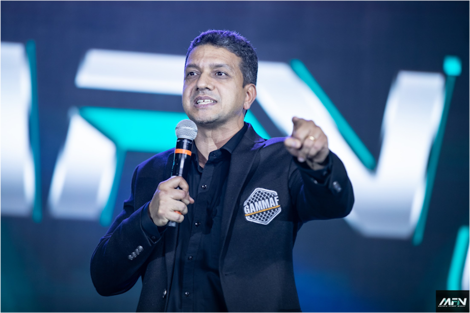

Dan Isaac founded Tigers Gym & Fight Club in the year 1998 in India. This was India's first ever fight team for combat sports athletes. He was also the original founder of India's oldest and largest organization to sanction and regulate mixed martial arts in India: All India Mixed Martial Arts Association [AIMMAA].

Sport MMA is a competition sport format of Mixed Martial Arts which allows 'controlled strikes' as opposed to the ‘full contact’ nature of existing amateur and professional mma fights. Sport MMA provides a platform for kids and teenagers both male and female to train and compete within a safe environment of the sport while training in all the different aspects of real MMA namely striking, takedowns and ground fighting. We are not taking away anything from the true nature of ‘Mixed Martial Arts’ rather solidifying its concepts through a scoring and point system easy to understand to the masses. The format of Sport MMA is also known as 'Ishudo' and was created by Indian MMA pioneer Daniel Isaac.
After moving to the United States Dan created a cardio kickboxing group fitness program 'Fighting Fit'. He also registered and founded the World Council of Kickboxing[WCK] and GAMMAF[ Global Authority for Mixed Martial Arts Federations] in the United States. In June 2020 Dan hosted the first ever Virtual MMA Championships which live streamed on Facebook.